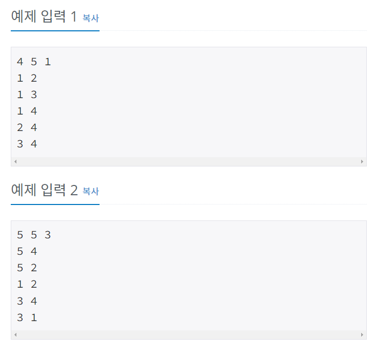

Anthem53's Tiny Library
홈으로 돌아가기
그래프 생성하는 사이트
설명

다음처럼 알고리즘 테스트에 사용될 그래프를 자동으로 생성해주는 사이트이다.
생성
그래프 방향 타입 :
무방향 그래프
유방향 그래프
입력 꼴
V E S D
V E S D W
V E S S D
V E S S D W
노드간 거리가 1 혹은 거리 :
노드간 거리가 1 혹은 0이다.
노드간 거리가 0 or 1이외 다른 값도 있다.
V의 범위 : 최솟값 :
최댓값 :
E의 범위 : 최솟값 :
최댓값 :
W의 범위 : 최솟값 :
최댓값 :
생성
결과
결과 :
비고 :
결과 복사
생성된 그래프 모양